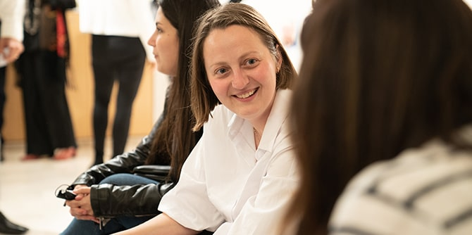
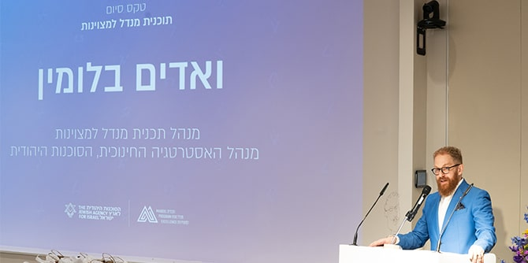
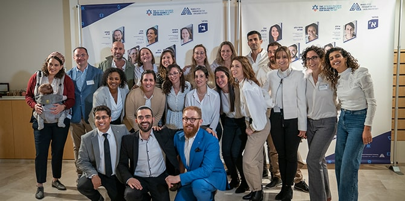

The celebratory graduation ceremony for Cohorts 2 and 3 of the Jewish Agency for Israel’s Jack Joseph and Morton Mandel Program for Excellence was held at the Mandel Foundation building in Jerusalem on November 24, 2021. Participants in the ceremony, which was attended by the graduates and their families, included Moshe Vigdor, director general of the Mandel Foundation–Israel; Amira Aharonovitz, director general of the Jewish Agency and a graduate of the Mandel School for Educational Leadership; Moshe Shiff, deputy director general of administration and human resources of the Jewish Agency; and program director Vadim Blumin.
The Mandel Program for Excellence prepares Jewish Agency emissaries who have returned to Israel after serving in Jewish communities abroad for managerial positions in the Agency itself. Since last year’s graduation ceremony could not take place due to coronavirus restrictions, the seven graduates of Cohort 2, many of whom already hold senior positions in the Jewish Agency, celebrated their graduation alongside the eight graduates of Cohort 3.
 Photo: Simanim Productions
In his address to the graduates, Vadim Blumin, director of the Mandel Program for Excellence, described the three principles on which the program is based. These include:
relationships and encounters with people who are different from us;
identity – the ability to tell our story as a collective, as groups, and as individuals; and
responsibility – the ability to take a stand and take responsibility for our future. “These are the three things that the program tried to accomplish,” he said. “On the one hand, we wanted to facilitate the personal and professional development of each participant through our mentoring framework. At the same time, however, we sought to forge each cohort as a diverse yet cohesive group and to nurture the three cohorts into an active community and leadership network.”
 Photo: Simanim Productions
"Congratulations to program director Vadim Blumin and to the program staff for their stellar work, and thank you
Alan Hoffmann for convincing us of the necessity for this vital program,” said Moshe Vigdor, director general of the Mandel Foundation–Israel. “I am a big believer in the Jewish Agency and in the historic role it continues to play,” he continued, “and I extend my congratulations to the cadre of talented managers that are represented here. I also believe that excellence is not just a word, but an essential element that requires constant reinterpretation. Excellence and the desire to do the best possible job enable us to give meaning to the words of our founder Morton Mandel: ‘In almost every kind of human endeavor, we are far from the top of the mountain. And it’s just a question of understanding that there is no limit to what an enterprise can accomplish.’ May you succeed in all your roles and future endeavors.”
Professor Jehuda Reinharz, president of the Jack, Joseph and Morton Mandel Foundation, addressed the graduates via video, saying: “I was pleased to hear that a large number of the program graduates remained with the Jewish Agency, as we had hoped, and have already taken on important and even senior positions. You are the Jewish Agency’s new leadership reserves, and you have an important role to play during this difficult time, both for Israel and for Diaspora Jewry…. I wish you every success.”
 Photo: Simanim Productions
{kind=link}
{kind=link}